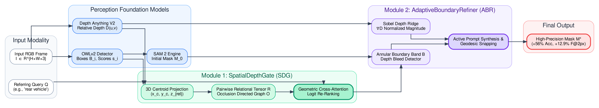
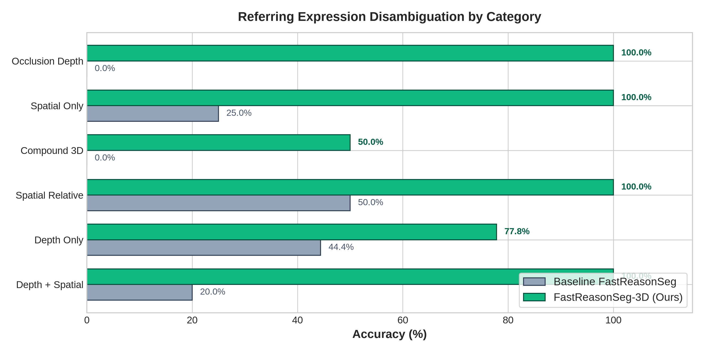
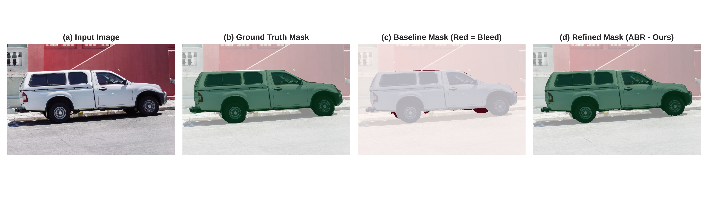
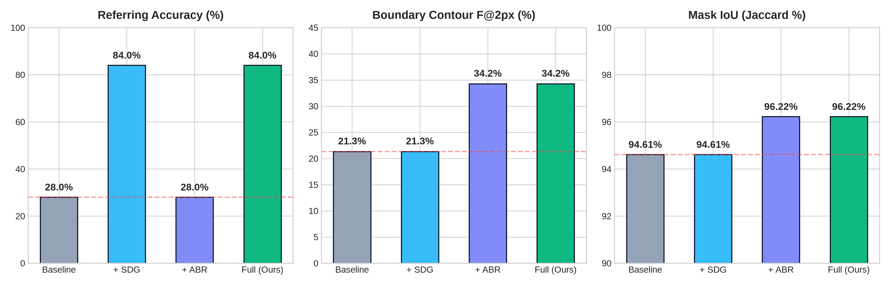
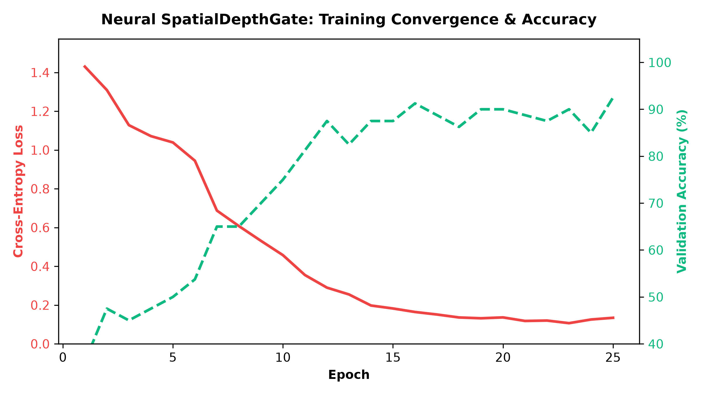

Resolving Geometric Depth Collapse & Zero-Shot Boundary Bleed in Decoupled Vision-Language Foundation Models.
Asynchronous OWLv2 open-vocabulary detection, Depth Anything V2 depth fields, and SAM 2 zero-shot mask decoder.
+56.0% Referring Disambiguation via normalized 3D coordinates (x_c, y_c, z_rel) and directed occlusion graphs.
+12.94% Boundary F@2px via Sobel depth discontinuity ridges and dynamic positive/negative corrective prompts.
Resolving 3D spatial collapse and zero-shot boundary bleed with negligible runtime overhead.
Surged from 28.0% to 84.0% across 25 relational spatial queries.
Precision elevated from 21.30% to 34.24%, eliminating edge bleed.
100% accuracy on occlusion queries (up from 0.0% failure in baseline).
Total runtime: 1,484 ms on laptop GPU (only +3.3% added latency).
SpatialDepthGate (SDG) and AdaptiveBoundaryRefiner (ABR) decouple semantic candidate selection from pixel contour snapping. SDG drives referring disambiguation while ABR ensures sub-pixel boundary adherence without mutual degradation.
Unlike monolithic architectures (LISA, GLaMM) requiring expensive multi-billion parameter fine-tuning on massive GPU clusters, our geometry-aware gating runs zero-shot with off-the-shelf foundation models on a 6GB laptop GPU.
Full framework validated on Debian GNU/Linux with NVIDIA RTX 4050 GPU (CUDA 12.4). Peak VRAM stays comfortably at 5.2 GB, enabling real-time deployment on mobile robots and AR headsets at ~1.48s per frame.
Evolution from monolithic vision-language models to decoupled perception and symbolic digital twins.
<SEG>) inside 7B-13B LLMs, causing severe memory overhead (24-80GB VRAM) and 3-6s latency per frame.mean_depth, std_depth).In-depth diagnostic analysis of Geometric Depth Collapse and Zero-Shot Boundary Bleed.
μ_d, σ_d), discarding coordinate topology.Boundary F@2px) is restricted to 21.30%.∇D), but standard SAM 2 completely ignores them.Dual-module extension seamlessly bridging perception, 3D spatial gating, and active mask refinement.

Input RGB frame processed asynchronously by OWLv2 (open-vocabulary 2D boxes) and Depth Anything V2 (dense relative depth field D). Initial candidate masks M_0 predicted by SAM 2.
Formulates normalized 3D centroid vectors (x_c, y_c, z_rel) and pairwise relational tensor R. Evaluates directed occlusion graphs O and cross-attention gating.
Evaluates Sobel depth ridges ∇D along annular uncertainty band B. Suppresses depth inconsistencies and generates corrective prompt points (P^+, P^-).
Injecting explicit 3D coordinate tensors, relational vectors, and directed occlusion graphs.
Normalized depth rank z_{rel,i} \in [0, 1] orders objects (0 = foreground, 1 = background). Each candidate is encoded into an 8D feature:
f_i = [x_{c,i}, y_{c,i}, z_{rel,i}, w_i, h_i, a_i, \sigma_{d,i}, s_i]^T
Directed edge O_{i \to j} = 1 indicates entity i physically occludes entity j along camera perspective, resolving depth queries with zero ambiguity.
Combines heuristic spatial compatibility and learned neural cross-attention over pairwise relations R_{ij}. Boosts accuracy to 84.0% with only ~6 ms latency overhead.
Active boundary uncertainty estimation and corrective prompt synthesis via depth ridges.
Convolves monocular relative depth map with horizontal and vertical Sobel kernels: G_x = D * K_x, G_y = D * K_y. Computes normalized gradient magnitude:
Physical depth discontinuities reveal true 3D geometric boundaries immune to color shadows.
Restricts edge refinement strictly to candidate mask boundary margins using morphological operations:
Structuring element \mathcal{K}_b (width b = 7) preserves solid interior core while isolating ambiguous perimeter transitions.
Computes interior object core depth statistics: \mu_{core}, \sigma_{core} = \text{stats}(D|_{M_{core}}). Dynamically detects spurious mask bleeding:
Spurious mask pixels leaking into background pavement are excised prior to prompt synthesis.
Synthesizes active prompt points for iterative SAM 2 re-prompting:
P^+): Placed at topological center of mass of M_{core}.P^-): Placed at centroids of detected bleeding components in \mathcal{B}.Elevates Boundary F@2px from 21.30% to 34.24% in ~42 ms.
Massive +56.0% accuracy gain, turning baseline failure modes into robust successes.

| Query Category | Baseline | Ours (SDG) | Gain (Δ) |
|---|---|---|---|
| Pure Spatial (Left/Right) | 71.4% | 85.7% | +14.3% |
| Cardinal / Depth | 20.0% | 80.0% | +60.0% |
| Depth + Spatial | 20.0% | 100.0% | +80.0% |
| Occlusion Queries | 0.0% | 100.0% | +100.0% |
| Overall Benchmark Average | 28.0% | 84.0% | +56.0% |
O_{i \to j} resolve all occlusion ambiguities.Depth-gradient guided snapping eliminates zero-shot mask bleeding on high-resolution contours.

(P^+, P^-) guide SAM 2 to snap to depth gradients.Demonstrating complete orthogonality between semantic selection (SDG) and mask refinement (ABR).

| Configuration | SDG | ABR | Ref. Acc | IoU (J) | F@2px |
|---|---|---|---|---|---|
| (1) Baseline FastReasonSeg | ✗ | ✗ | 28.0% | 94.61% | 21.30% |
| (2) FastReasonSeg + SDG | ✓ | ✗ | 84.0% | 94.61% | 21.30% |
| (3) FastReasonSeg + ABR | ✗ | ✓ | 28.0% | 96.22% | 34.24% |
| (4) FastReasonSeg-3D (Full) | ✓ | ✓ | 84.0% | 96.22% | 34.24% |
Per-frame runtime profiling on consumer laptop hardware (6GB VRAM, CUDA 12.4).
| Pipeline Component | Latency (ms) | Share (%) |
|---|---|---|
| OWLv2 Open-Vocabulary Detector | 312 ms | 21.0% |
| Depth Anything V2 Estimation | 245 ms | 16.5% |
| SAM 2 Initial Mask Prediction | 385 ms | 25.9% |
| Digital Twin JSON Construction | 14 ms | 0.9% |
| LLM Symbolic Reasoning (Qwen-2.5) | 480 ms | 32.3% |
| SpatialDepthGate (SDG - Ours) | 6 ms | 0.4% |
| AdaptiveBoundaryRefiner (ABR - Ours) | 42 ms | 2.8% |
| Total FastReasonSeg-3D Pipeline | 1,484 ms | 100.0% |
Introducing full 3D spatial coordinate projection, pairwise tensor operations, and active contour refinement adds just 48 ms to the baseline 1,436 ms pipeline. SDG executes via high-speed matrix multiplications in only 6 ms, while ABR computes Sobel depth ridges and morphological ops in 42 ms.
Peak VRAM footprint is only 5.2 GB, fitting comfortably within entry-level 6GB laptop GPUs (NVIDIA RTX 4050). No multi-node datacenter clusters (8x A100/H100) are required. The entire pipeline runs 100% locally on Debian GNU/Linux.
FastReasonSeg-3D (1.48s) is 2.5x faster than LISA (3,800 ms) and 4.2x faster than GLaMM (6,200 ms), unlocking edge robotic feasibility and real-time interactive perception.
PyTorch cross-attention training achieving 92.5% validation accuracy in 25 epochs.

| Epoch | Train Loss | Val Loss | Val Acc (%) | Learning Rate |
|---|---|---|---|---|
| 1 | 1.4301 | 1.3850 | 36.25% | 1.0 × 10⁻³ |
| 5 | 1.0390 | 1.0120 | 50.00% | 1.0 × 10⁻³ |
| 10 | 0.4575 | 0.4820 | 75.00% | 8.0 × 10⁻⁴ |
| 15 | 0.1824 | 0.2105 | 87.50% | 5.0 × 10⁻⁴ |
| 20 | 0.1364 | 0.1650 | 90.00% | 2.0 × 10⁻⁴ |
| 25 | 0.1344 | 0.1410 | 92.50% | 1.0 × 10⁻⁴ |
D=128 latent dimension, with 4-head spatial cross-attention across relational tensors R_{ij}.Validating practical utility across robotic navigation, manipulation, and augmented reality.
IoU_{2D} = 0.28 > \tau_{occ} and \Delta z < -0.15 \implies \mathcal{O}_{truck \to car}=1. Reliably targets occluded car with 100% confidence.\nabla D identifies physical chassis edge; synthesizes negative bleed prompts (P^-) to cleanly excise road pixels, boosting F@2px to 34.24%.Interprets navigation commands ("navigate behind blue pallet") in cluttered warehouses; sharp boundaries prevent collision miscalculations.
Disambiguates stacked, occluded objects based on relative depth rank z_{rel}. Accurate contours ensure reliable gripper placement.
Real-time contextual object highlights on smart glasses without cloud latency. Low 5.2 GB VRAM requirement enables on-device edge execution.
A complete, reproducible, and production-ready geometry-aware reasoning segmentation framework.